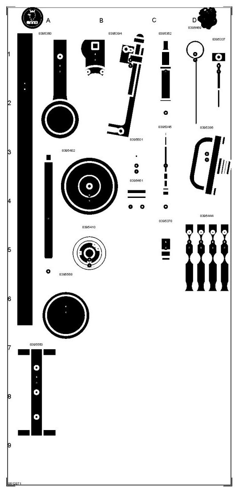

86 12 871 Toolboard T7 Diesel 4-Cyl
86 12 871 Toolboard T7 Diesel 4-Cyl

For diesel
Group: General
Tools on the full-size toolboard (part No.):
8395337 8395345 8395352 8395360 8395378 8395386 8395394 8395402 8395410 8395444 8395451 8395469 8395501 8395550 8395568